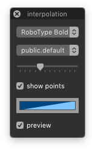

interpolationPreview¶
-
class
InterpolationPreviewDialog[source]¶ Bases:
hTools3.dialogs.glyphs.base.GlyphsDialogBaseA drawing helper which shows another font and intermediate interpolation steps in the Glyph View.
>>> from hTools3.dialogs.glyph.interpolationPreview import InterpolationPreviewDialog >>> InterpolationPreviewDialog()
-
title= 'interpolation'¶
-
key= 'com.hipertipo.hTools3.dialogs.glyphs.interpolationPreview'¶
-
settings= {'stepsMax': 12, 'color2': (1, 0, 1, 0.65), 'steps': 7, 'showPoints': False, 'stepsMin': 1}¶
-
allFonts= {}¶
-
_currentGlyph= None¶
-
font2¶
-
fontLayer¶
-
steps¶
-
showPoints¶
-
pointSize¶
-
color1¶
-
color2¶
-
colors¶
-